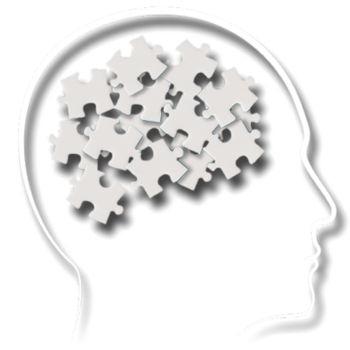

O Escárnio em Prol da Saúde Mental

Regina mexia com psicanálise e foi recomendada pelo seu pai, homeopata. Seguia a cartilha que na prática se resumia a "bater papo". Otimismo, "ver a vida de outra forma", sugestões vazias. Consultas se alongavam sem resultado nem perspectiva de melhora.
Mara trabalhava em opostos: psiquiatra, mas também "espiritualista". Bem-intencionada, boa de papo, porém sem traquejo algum nos extremos além da esperança gerada pelos seus próprios dogmas. Tinha seu prazer politicamente incorreto: fumava, fumava... até que o fumo a vitimou. Padeceu com seus 70 e poucos anos. No fim, enquanto outros esperavam serem salvos, a salvação não veio nem para si mesma.
Fábio era hipnoterapeuta, baseado nos capciosos métodos de "reprogramação mental": colocar-se num estado de profundo relaxamento, imaginar-se num campo florido, a fim do subconsciente estar mais apto e receptivo a mudanças de mentalidade. Um dia, porém, Fábio desapareceu. Sem deixar vestígios. Número apagado no WhatsApp. Raptado, esquecido, ninguém sabe.
Eduardo, um coach. Carismático, sabia capitalizar as agonias alheias, tinha sempre uma resposta pra tudo. Acreditava no "poder das palavras", micromanagement: não poder falar "meu problema", apenas "problema", pois caso contrário você estaria "validando estigmas negativos". Modelo predatório que prometia milagres em apenas três consultas. Depois, desambiguava para outras: constelação familiar, recomendações, propaganda automatizada no WhatsApp.
Sheila...
Sheila lidava com remédios. Sua razão de existência. Aproveitava-se da brecha psiquiátrica que a permitia ganhar seus 500 reais (ou mais) por consulta sem praticamente um pingo de esforço. Prosperava em cima de amostras grátis dadas aqui e ali, e o gatekeep de acesso à medicação por meio das valorosas receitas dadas.
Não sabia muito o que estava fazendo, o que é de praxe nos dias de hoje: área com falta de profissionais, de comprometimento. Onde dinossauros ainda se mantém de pé devido às "décadas de experiência", aos contatos, às conexões.
Gostava muito de ir em congressos e palestras. Vivia a vida boa e achava que estava evoluindo na "carreira".
Diagnosticava os pacientes com "sintomas de depressão". O que é suficiente — afinal, para que confundí-los investigando a fundo e rotulando-os com mil e um transtornos diferentes?
Passava o remédio que mais funcionava nas cobaias e que deva na telha, ainda que certos antipsicóticos fortes jamais deveriam ser prescritos para uso contínuo e prolongado (muito menos por quase dois anos, como de fato foram).
Mas, no fundo, não havia nada do que reclamar. O dinheiro era máximo, o esforço e a interação eram mínimos. No fim do mês, poderia descansar feliz sabendo que seus R$ 30~40 mil caíram na conta, e que ninguém poderia fazer nada a respeito disso. E assim se seguiria até a aposentadoria (que poderia muito bem ser postergada — afinal, tal trabalho tão nobre merece continuidade).
Os três pilares
Não há investigação, não além do nível superficial.
Após a primeira consulta, o iluminado terapeuta já sabe tudo o que precisa, e "ovo te curar a partir de agora". As próximas se resumem a apenas aplicar a cartilha e os tais métodos ad nauseum.
Em geral, não há preocupação ou vontade de descobrir entraves, bloqueios, fatores genéticos ou consequências psicossomáticas. Tudo se resume às meras platitudes das "formas de pensar", do subconsciente, do mindset.
De minha parte, tudo que recebi oficialmente até hoje foi o clássico combo-diagnóstico de ansiedade + depressão. Por outro lado, suspeitas e conclusões tanto pessoais quanto de terceiros não faltaram: desde transtorno Borderline (TPB), pós-traumático complexo (TEPT-C), TDAH leve... e por aí vai.
Não há procura por desenvolvimento pessoal.
É a parábola da gorda plus size:
"Doutura, eu não estou me sentindo bem com meu peso :("
"Que bobagem! Você é linda do jeito que é. Quem te disse que estar acima do peso é um problema?"
"Ninguém, é só eu mesma que não estou feliz com meu corpo..."
"Viu? Isso é tudo coisa da sua cabeça. A sociedade bota esses estigmas na gente. Tem nada é que dar bola pra isso."
"É, eu sei, mas... até que seria bom se eu conseguisse emagrecer um pouco..."
"Olha, nessas horas, o melhor que você pode fazer é esquecer isso e focar em coisas mais positivas. Vamos lá, me diz o que você mais valoriza em si mesma? Vou te ensinar uns métodos pra praticar (...)"
Não há foco em mudança de rotina.
Vive numa realidade extremamente estressante na faculdade ou trabalho? Possui sono atribulado, alimentação desbalanceada? Sente-se solitário no dia-a-dia, gasta horas de condução tendo como seu próprio enredo o futuro incerto? Nada disso conta ponto. O be-a-bá já está pronto desde o começo: para o terapeuta, a "reprogramação mental"; para o psiquiatra, domar e reduzir tudo ao mero controle dos níveis de dopamina e serotonina — como dar suplemento vitamínico a quem jejua e pula o almoço.
De um jeito ou de outro, a essência é clara: o famoso "passar perfuminho na bost@".
Feito isso, criam-se as falsas esperanças e perspectivas de melhora, alimentadas pelo gaslighting de cada sessão. Uma encadeia outra, e outra, e outra... e os problemas não vão embora; muitos de volta à estaca zero. No fim, descobre-se que apenas foi perdido tempo, dinheiro e ânimo nessa empreitada. A fé na solução mágica diminui; e você começa a achar que o problema é consigo mesmo, e não com o sistema.
(seria essa a tal ética profissional de que tanto se gabam?)
Funciona pra alguns? Depende do caso, do quanto fora do eixo o indivíduo se encontra. Matar uma formiga e assassinar um presidente são incumbências com níveis de dificuldade radicalmente dispares.
Ademais, pessoas diferentes são susceptíveis a tratamentos em níveis diferentes. Mulheres — no que me perdoe o politicamente correto que nos julga por mencionar a verdade — são mais influenciáveis a tais métodos e estímulos por padrão; e o mesmo vale para pessoas de QI mediano e abaixo.
É como um livro de auto-ajuda ao vivo e a cores, pago em inúmeras prestações semanais.
Infelizmente, livros de auto-ajuda nunca me ajudaram muito (com o perdão do trocadilho).
Quis custodiet ipsos custodes?
Quem vigiará o terapeuta/psiquiatra? Nessa área, todo mundo quer vender o próprio peixe.
Terapeutas vão acreditar que seu tratamento é o melhor do mundo e que há de funcionar inequivocadamente em todos os casos. Psiquiatras, por sua vez, vão delegar a responsabilidade aos primeiros.
Não há um pipeline corretamente definido para um jovem que (infelizmente) entra nesse mundo de tratamento sem fim:
- começa-se com recomendações (seja de parentes, amigos, ou simplesmente buscas aleatórias na web)
- encontra-se uma possível forma de tratamento "ideal" (freudiana, jungiana, cognitivo-comportamental, hipnoterapia, etc) ou simplesmente pula-se essa etapa
- escolhe-se o profissional em si (seja também por recomendação, ou fatores como fama no Doctoralia, atendimento na mesma cidade, possibilidade de teleconsulta, etc)
- inicia-se o tratamento e deseja-se o melhor para si mesmo, repetindo-se o mantra de esperanças renovadas, "vai dar tudo certo", "estou em boas mãos"
Porém, a fachada logo cai, e finda a euforia inicial, os problemas continuam. O que era apenas um incômodo e estranhamento começa a te fazer questionar se essa era (ou se continua sendo) a melhor opção. Estando em cima do muro, só te restam duas alternativas:
- continuar na Síndrome de Estocolmo, "confiando" no terapeuta e dando tempo ao tempo até que alguma mágica finalmente aconteça
- desistir, engolir a seco, saber que não há como recuperar o tempo perdido, e encarar a dura realidade de que será necessário recomeçar do zero
Cedo ou tarde, a segunda opção é inevitável. Só que não havia ninguém para questionar o que estava sendo feito de errado.
Ninguém para te avisar sobre estar fora de rota. Ninguém com o olhar mais aguçado de poder metrificar que melhora nenhuma estava acontecendo, num mundo em que o tempo é precioso. Ninguém para quebrar o encanto e te guiar à luz.
Não há ninguém para vigiar o vigia.
Se defender ante ao sofrimento não pode ser feito com urgência, mas exige celeridade.
Existem "profissionais" e profissionais; mantra que muitos gostam de repetir. Entretanto, como algo tão sensível como a saúde mental pode ter os resultados tratados como loteria, com fatores "achar o cara certo"?
Não há como pleitear lógica no que é mero fruto do acaso.